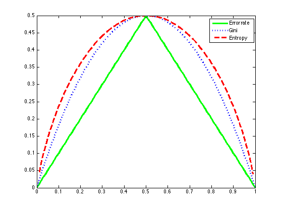

% Fig 9.3 from Hastie book p=0:0.01:1; gini = 2*p.*(1-p); entropy = -p.*log(p) - (1-p).*log(1-p); err = 1-max(p,1-p); % scale to pass through (0.5, 0.5) entropy = entropy./max(entropy) * 0.5; figure; plot(p, err, 'g-', p, gini, 'b:', p, entropy, 'r--', 'linewidth', 3); legend('Error rate', 'Gini', 'Entropy') printPmtkFigure('giniDemo')